In this project we implement a real-time cloth simulation based on a mass-spring system and then extend that system into a visually rich cloth rendering pipeline. We begin by discretizing the cloth into a grid of point masses connected by structural, shearing, and bending springs, which gives the sheet a simple but effective physical model for stretching, skewing, and resistance to folding. We then simulate motion by accumulating external and internal spring forces, advancing the masses with Verlet integration, and enforcing stretch limits to maintain stability. After the core dynamics are in place, we add collisions against spheres and planes, incorporate self-collision using spatial hashing so that the cloth can fall onto itself efficiently, and finally render the result with a sequence of GLSL shaders.
Across the assignment, the cloth evolves from a regular wireframe grid into a more physically plausible animated surface that can sag, drape, wrap around rigid bodies, and settle into layered folds. Each stage of the project adds a different piece of realism. The spring network defines the local mechanical behavior of the cloth, numerical integration determines how that behavior unfolds in time, collision handling keeps the sheet from passing through external objects, and self-collision prevents different regions of the cloth from occupying the same space. The shader portion then translates this simulated geometry into different visual appearances, ranging from diffuse and Blinn-Phong shading to texture mapping, bump mapping, displacement mapping, mirror reflection, and a custom water-like surface effect.
One of the most interesting aspects of the project is how closely the physical and visual components depend on one another. Small changes in density, spring stiffness, or damping produce noticeably different drape patterns, and those geometric differences become even more apparent once lighting and shading are applied. In the same way, shader-based surface detail can dramatically change the way the cloth reads visually even when the underlying simulated mesh is unchanged. Working through the full pipeline reinforced that believable cloth behavior is not produced by a single technique, but by the interaction of geometric discretization, force modeling, stable time integration, collision response, and shading.
Build / Run Notes
We worked on Windows in Visual Studio using the CMake Open Folder workflow in x64-Debug.
Dependencies were provided through vcpkg and the CMake toolchain file was configured as
C:\vcpkg\scripts\buildsystems\vcpkg.cmake. We built using Build → Build All.
We ran clothsim.exe from the build output directory using command line arguments in
launch.vs.json. Since Visual Studio launches from the build folder, relative paths
typically need ../../../ to reach the repository root.
# Visual Studio CMake run arguments
# launch.vs.json
"args": ["../../../scene/pinned4.json"]
# Common scenes used in Homework 4
# pinned2.json
# pinned4.json
# sphere.json
# plane.json
# selfCollision.json
# Common controls
# P pause / play simulation
# R restart simulation
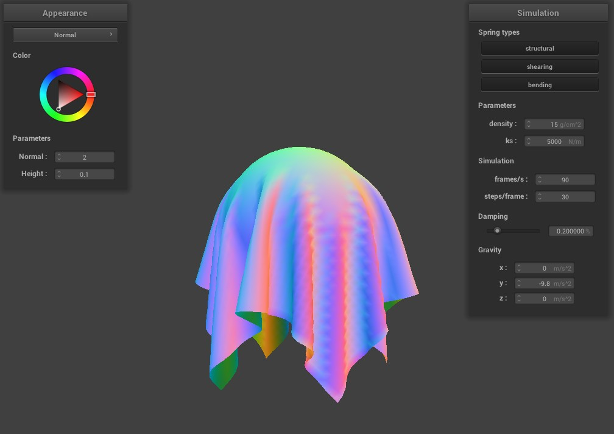
Figure 1. Representative cloth simulation result on the sphere scene.
Part 1: Masses and Springs
Point-Mass Grid Construction and Coordinate Layout
In Part 1, the cloth is discretized into a regular lattice of point masses spanning the physical
cloth dimensions. Let \(w\) denote the cloth width, \(h\) denote the cloth height,
\(N_w\) denote the number of point masses along the width direction, and \(N_h\) denote the
number of point masses along the height direction. The implementation of Cloth::buildGrid
begins by clearing any existing masses and springs, then constructing all \(N_w N_h\) point masses
before inserting any springs. Because the masses are sampled uniformly over the sheet, the spacing
between adjacent masses is
\[
\Delta x = \frac{w}{N_w - 1},
\qquad
\Delta y = \frac{h}{N_h - 1}.
\]
These spacings define the cloth's rest configuration, so the spring rest lengths are inherited directly
from the geometry of the initial grid. If the grid is indexed by integers \((x,y)\) with
\(0 \le x < N_w\) and \(0 \le y < N_h\), then a horizontal cloth lies on a plane of constant
\(y\)-coordinate and varies over the \(xz\)-plane, while a vertical cloth varies over the \(xy\)-plane.
For a horizontal sheet, the initial position is
For a vertical sheet, a small random offset \( \varepsilon \in [-10^{-3},\,10^{-3}] \) is added in the
\(z\)-direction to prevent the cloth from starting in an exactly coplanar, perfectly symmetric state. In
that case, the initial position is
Pinned masses are determined from the scene's pinned coordinate list. Pinning changes the boundary
conditions of the sheet without changing the resolution of the lattice itself, so two scenes can have the
same \(50 \times 50\) point-mass grid while still deforming differently because different subsets of masses
are fixed in place.
Row-Major Storage, Pinning, and Indexing
The point masses are stored in row-major order, meaning the implementation iterates across each row and
then advances to the next row. This ordering is required because later code, especially
buildClothMesh(), assumes that the two-dimensional grid has been flattened into the one-dimensional
point_masses vector using the index map
\[
I(x,y) = y N_w + x.
\]
Here, \(I(x,y)\) is the one-dimensional storage location of the point mass at grid coordinate \((x,y)\).
If the storage order were inconsistent with this map, later neighbor lookups and triangle construction
would attach the wrong vertices. The pinning logic is conceptually separate from the geometry: every point
mass is inserted at its regular lattice position, but each mass is tagged as either movable or pinned.
A pinned mass therefore remains part of the cloth connectivity while acting as a fixed boundary condition
during later simulation steps.
Spring Topology: Structural, Shearing, and Bending Constraints
After all point masses have been constructed, the second pass through the grid inserts the three required
spring families: structural, shearing, and bending. Delaying spring construction until after the
point_masses vector is complete is important because each spring stores pointers to its endpoint
masses. If springs were inserted while the vector was still growing, reallocation could invalidate
previously stored pointers.
Structural springs connect each mass to its immediate left neighbor and immediate upper neighbor. These
springs are the primary resistance to stretching and compression along the horizontal and vertical lattice
directions, so their rest lengths are one grid step, namely \( \Delta x \) or \( \Delta y \) depending on
orientation within the grid.
Shearing springs connect each mass to its upper-left and upper-right diagonal neighbors. Their purpose is to
resist in-plane skewing of the local grid cells. If \( \Delta x \) and \( \Delta y \) are the horizontal and
vertical grid spacings, then the diagonal rest length of a shearing spring is
Bending springs connect each mass to the mass two steps to the left and two steps above. These springs act
over a larger neighborhood than the structural springs, so they do not mainly preserve local edge lengths.
Instead, they resist sharper local changes in curvature and suppress overly abrupt folding. Their rest
lengths are two grid steps in the corresponding direction. Each spring is added only once by connecting a
point mass to previously visited neighbors such as left, above, upper-left, upper-right, two-left, and
two-above. This avoids duplicate springs while still covering the full constraint graph of the cloth.
Wireframe Comparison on scene/pinned2.json
The required Part 1 screenshots use scene/pinned2.json in wireframe mode and compare three
spring-constraint configurations: without any shearing constraints, with only shearing constraints, and
with all constraints enabled. Because the scene, camera, and mesh resolution remain fixed across the three
images, the comparison isolates the geometric role of the spring families rather than changing the cloth
dimensions or the density of the point-mass grid.
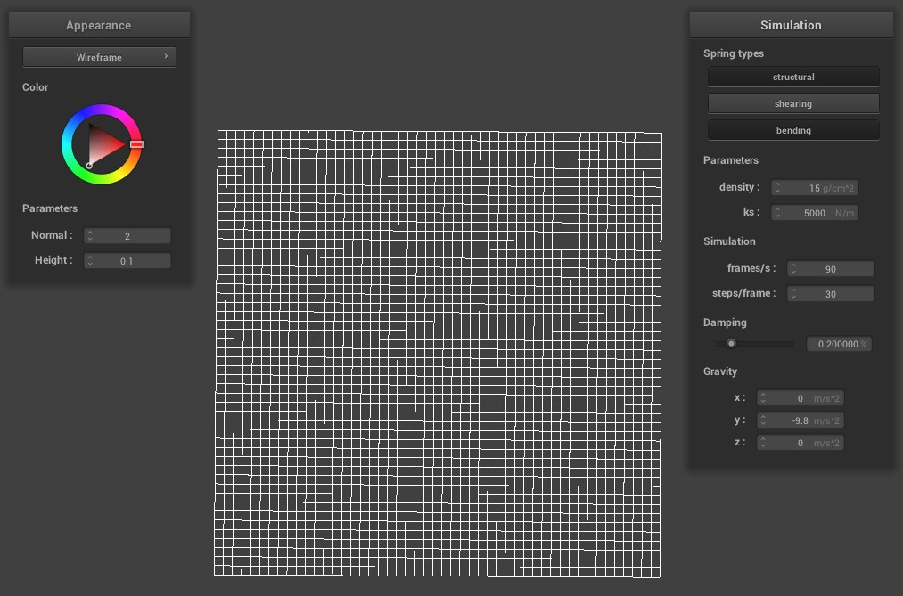
Figure 2. without shearing constraints.
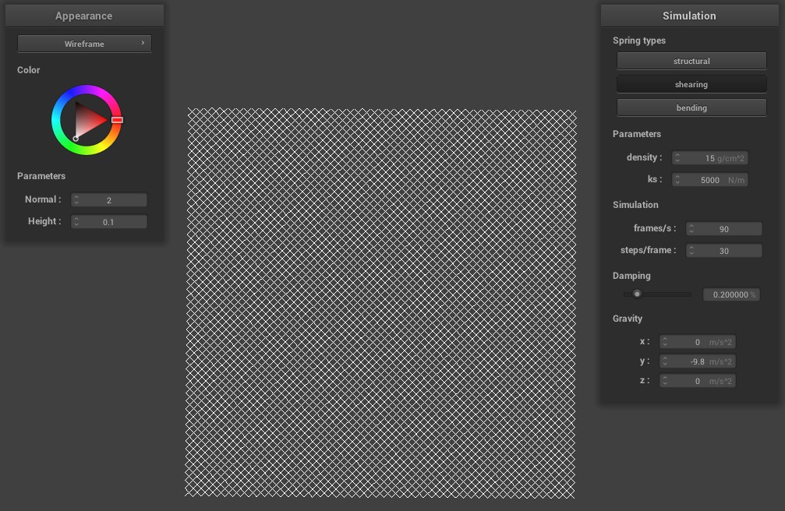
Figure 3. with only shearing constraints.
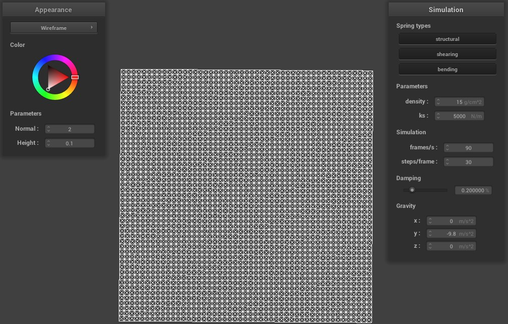
Figure 4. with all constraints enabled.
Interpretation of the Three Wireframe States
In the no-shearing image, the structural and bending springs remain active, so the cloth still preserves row
and column spacing reasonably well and retains some resistance to large-scale curvature. However, the
diagonal stabilizers are absent, so local grid cells can skew more easily. This makes the sheet less
resistant to in-plane angular distortion, even though nearest-neighbor axial spacing is still constrained.
In the only-shearing image, the cloth is connected only by diagonal springs. This removes the primary axial
resistance supplied by structural springs and also removes the larger-scale smoothing effect of bending
springs. The result is the least physically plausible of the three states: diagonal connections remain, but
direct row and column support is lost, so the cloth is much less stable in the lattice directions that
define the original grid.
In the all-constraints image, the wireframe represents the full mass-spring model from Part 1. Structural
springs preserve local axial distances, shearing springs resist cell skew, and bending springs suppress
abrupt local folding. As a result, this view shows the most complete and most cloth-like constraint network.
The three-image comparison therefore illustrates the distinct geometric role of each spring family in the
discrete simulation model.
Part 2: Simulation via Numerical Integration
Force Accumulation, Hooke's Law, and Verlet Integration
In Part 2, the cloth begins to behave as a dynamic system rather than a static spring network. The simulation
step starts by computing the mass associated with each point mass from the total cloth mass. Let \(w\) and \(h\)
denote the cloth dimensions, let \(\rho\) denote the cloth density, and let \(N_w\) and \(N_h\) denote the
numbers of point masses along the width and height directions. Then the mass \(m\) assigned to a single point
mass is
\[
m = \frac{w h \rho}{N_w N_h}.
\]
External accelerations, such as gravity, are converted into forces by multiplying each acceleration vector by
the point-mass mass \(m\) and summing over all prescribed external accelerations. If
\(\mathbf{a}_{\mathrm{ext}}\) denotes an external acceleration and \(\mathbf{F}_{\mathrm{ext}}\) denotes the
resulting external force on a point mass, then \( \mathbf{F}_{\mathrm{ext}} = m \mathbf{a}_{\mathrm{ext}} \).
This total external force is assigned to each point mass at the beginning of the simulation step.
After the external forces are initialized, spring forces are accumulated using Hooke's law. Let
\(\mathbf{x}_a\) and \(\mathbf{x}_b\) denote the current positions of the two spring endpoints, let
\(l\) denote the spring's rest length, and let \(k_s\) denote the spring constant. Then the spring force is
Equal and opposite spring forces are applied to the two endpoints so that the total internal force remains
balanced. Structural and shearing springs use the full spring constant, while bending springs are weakened
relative to the others so that the cloth resists large-scale folding without becoming unnaturally rigid.
Once the total force is known, the acceleration of a point mass is obtained from Newton's second law,
\( \mathbf{a}_t = \mathbf{F}_t / m \), where \(\mathbf{F}_t\) is the total force at the current time step.
The positions of all non-pinned masses are then advanced using Verlet integration. Let \(d\) denote the damping
fraction and let \(\Delta t\) denote the simulation time step. If \(\mathbf{x}_t\) is the current position and
\(\mathbf{x}_{t-\Delta t}\) is the previous position, then the update is
This update preserves momentum implicitly through the difference
\( \mathbf{x}_t - \mathbf{x}_{t-\Delta t} \), while the factor \(1-d\) gradually removes energy from the
motion. Pinned masses are excluded from this position update so that they continue to act as fixed boundary
conditions for the cloth.
Post-Integration Stretch Correction
After Verlet integration, some springs may have stretched too far during a single time step. To control this,
the simulation applies the Provot-style stretch correction required by the assignment. Let \(l\) denote the rest
length of a spring. The current spring length is required to satisfy
If the spring is longer than \(1.1\,l\), the excess extension is projected onto the spring direction to form a
correction vector. If neither endpoint is pinned, the correction is split evenly between the two masses. If
exactly one endpoint is pinned, the entire correction is applied to the unpinned endpoint. If both endpoints are
pinned, no positional correction is applied. This post-integration step prevents extreme stretching and helps
stabilize the cloth, especially when the spring constant is low or when the cloth is undergoing large motion.
Experiment Setup and Baseline Parameters
The parameter experiments were performed on scene/pinned2.json with all three spring types
enabled. A single parameter was changed at a time while the others were held at the default values, so the
visible differences can be attributed to that parameter alone. The baseline settings were
\( \rho = 15 \), \( k_s = 5000 \), and \( d = 0.2\% \). The comparison images were chosen at moments where the
differences were most visible. For spring constant and density, the clearest differences appear in the amount of
sag and the final drape of the cloth. For damping, the most informative images are captured mid-motion, since
damping changes how quickly oscillation dies out rather than strongly changing the final equilibrium shape.
Parameter
Low Value
Default Value
High Value
Main Visual Difference
\(k_s\)
500
5000
50000
Lower \(k_s\) produces deeper sag and a softer drape, while higher \(k_s\) keeps the cloth taut and more rigid.
\(\rho\)
5
15
45
Higher density produces a heavier-looking drape and deeper center sag.
\(d\)
0.05%
0.2%
1.0%
Lower damping allows oscillation to persist longer, while higher damping causes the cloth to settle faster.
Density Comparison
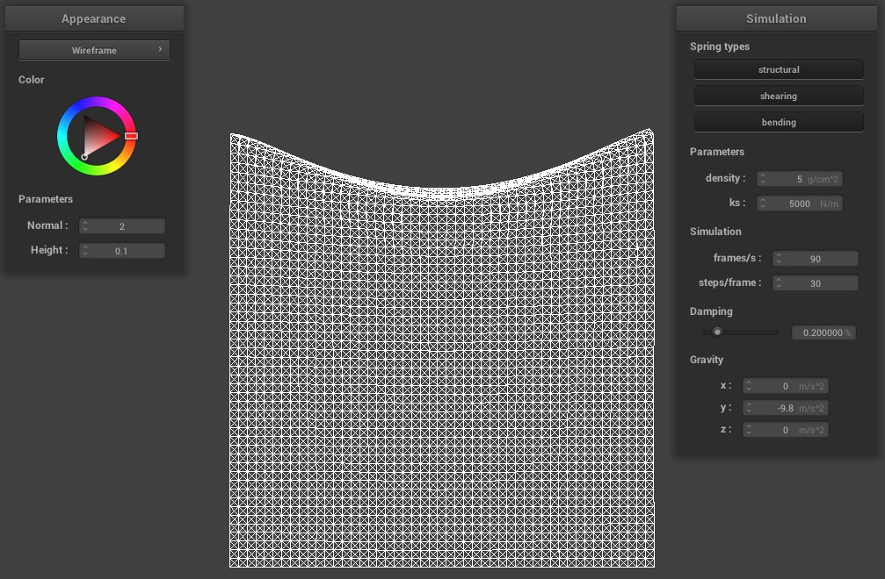
Figure 5. pinned2.json with \( \rho = 5 \).
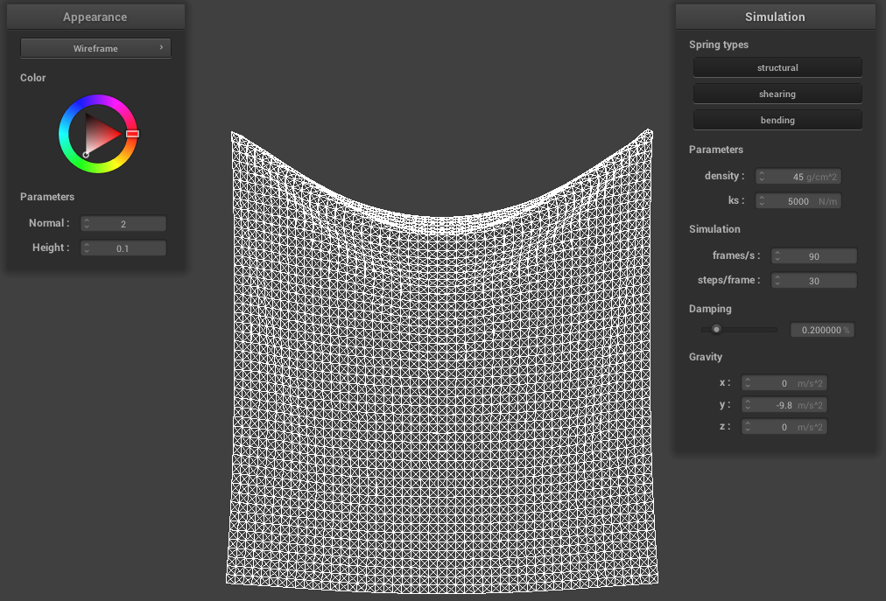
Figure 6. pinned2.json with \( \rho = 45 \).
Changing the density \(\rho\) changes the mass of each point mass while leaving the spring network fixed.
Increasing \(\rho\) therefore makes the cloth behave like a heavier sheet relative to the same spring
resistance. In the low-density image, the cloth appears lighter and less heavily weighted, so the center sag is
shallower and the drape looks slightly gentler. In the high-density image, the cloth hangs with a more
pronounced center droop and a more weighted-looking profile. The heavier configuration also tends to carry more
motion before settling, so the cloth reads as less spring-dominated and more gravity-dominated.
Spring Constant Comparison
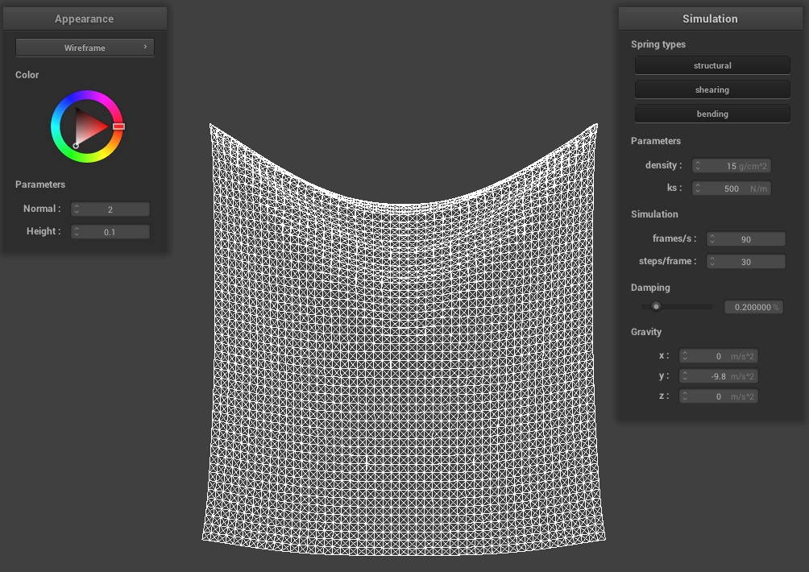
Figure 7. pinned2.json with \( k_s = 500 \).
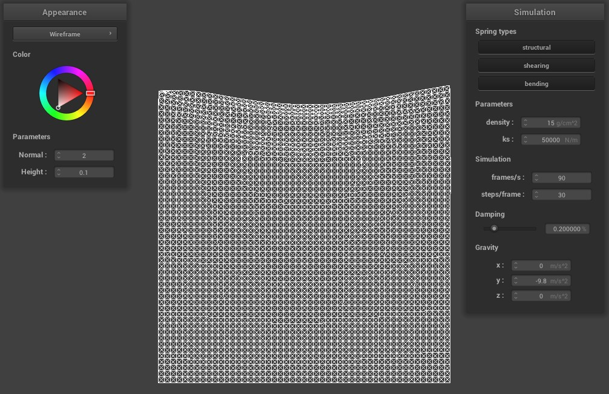
Figure 8. pinned2.json with \( k_s = 50000 \).
The spring constant \(k_s\) directly controls how strongly the cloth resists deviation from its rest shape. At
low \(k_s\), the cloth is much softer and stretches more easily, so it sags deeply between the pinned corners
and forms a looser, more compliant drape. At high \(k_s\), the cloth resists stretching much more strongly, so
the center stays higher and the overall sheet looks more taut. From start to rest, the low-\(k_s\)
configuration behaves like a soft flexible sheet, while the high-\(k_s\) configuration behaves like a much
stiffer fabric that preserves its structure more aggressively under gravity.
Damping Comparison
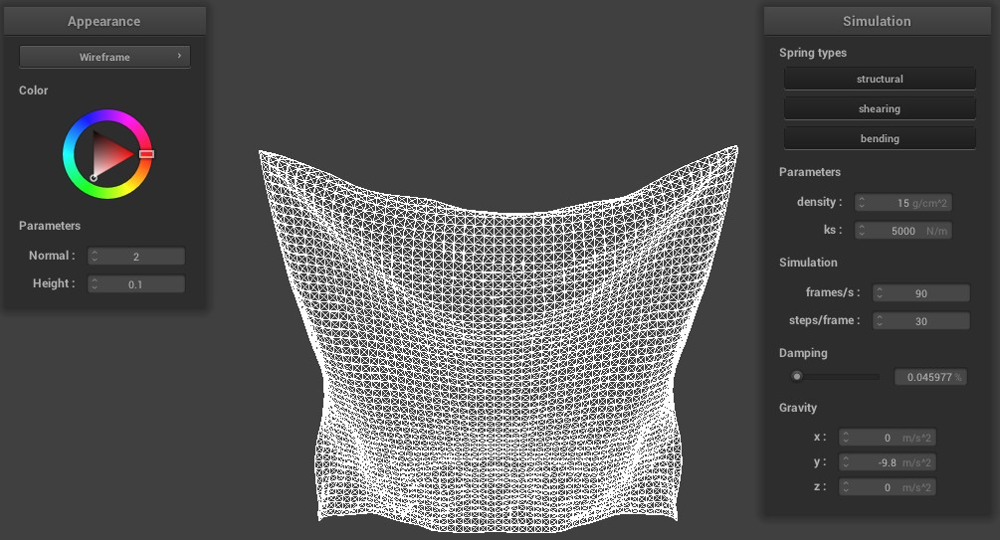
Figure 9. pinned2.json with \( d = 0.05\% \).
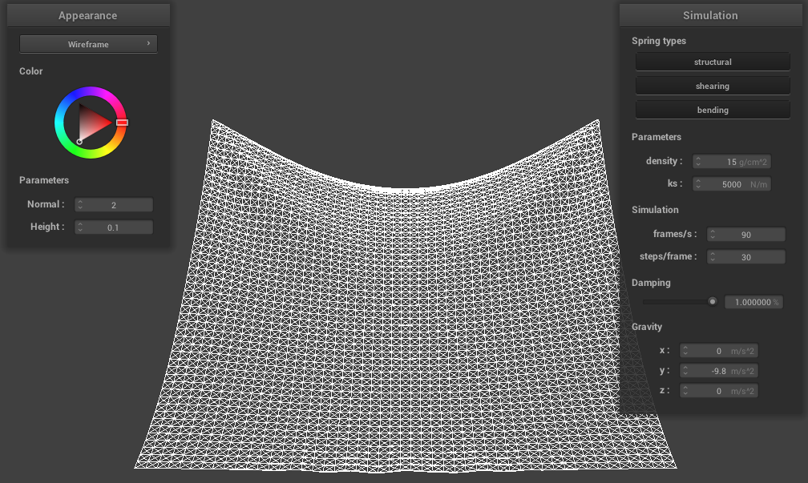
Figure 10. pinned2.json with \( d = 1.0\% \).
The damping factor \(d\) primarily changes how quickly the cloth loses motion rather than changing the final
static shape. For that reason, the most informative comparison is captured while the cloth is still moving. In
the low-damping image, the sheet is still oscillating strongly, with visible distortion through the middle and
lower regions. This indicates that little energy is being removed each step, so the cloth continues to swing and
takes longer to settle. In the high-damping image, the oscillation has decayed much more quickly, and the cloth
appears calmer and closer to equilibrium at the same stage of motion. Increasing \(d\) therefore suppresses
oscillation and causes the cloth to settle more rapidly.
Final Shaded Resting State on scene/pinned4.json
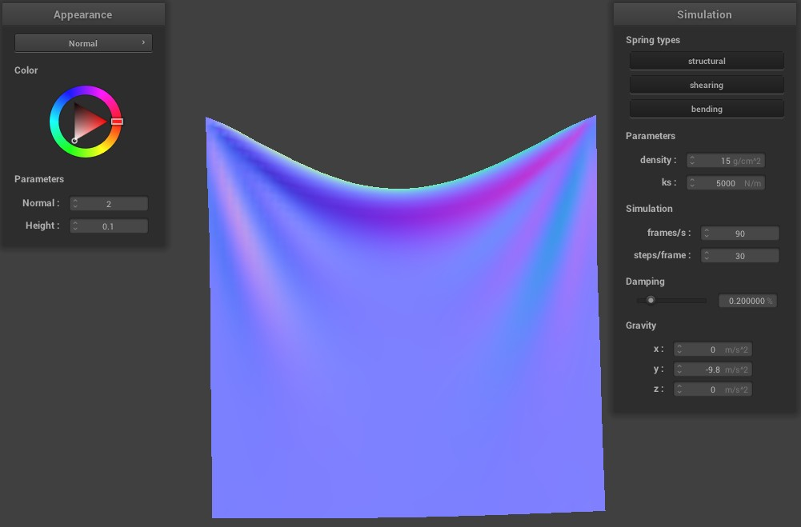
Figure 11. Final shaded resting state of \( \text{scene/pinned4.json} \) using the default parameters
\( \rho = 15 \), \( k_s = 5000 \), and \( d = 0.2\% \).
The final shaded pinned4.json image shows the cloth after the full simulation step has been
applied repeatedly until the sheet comes to rest. Because the default parameters were restored for this
screenshot, it serves as the baseline final result for Part 2 rather than an extreme comparison case. The cloth
settles into a smooth suspended shape with visible curvature between the pinned corners, demonstrating that the
combination of force accumulation, Verlet integration, and stretch limiting produces a stable and visually
plausible resting configuration.
Part 3: Handling Collisions with Other Objects
Collision Handling in Cloth::simulate
In Part 3, collisions are incorporated after the Verlet integration step and before the spring
stretch-limiting correction. Once the new tentative positions of the point masses have been
computed, the simulator loops over every point mass and every collision object in the scene and
asks each collision object to resolve contact with that point mass. This separates the global
simulation logic from the object-specific collision geometry: the cloth simulator is responsible
for advancing the masses in time, while each collision class is responsible for defining how its
own surface corrects a penetrating point mass.
In our implementation, this means that the method
Cloth::simulate iterates through the point-mass set and calls
collide(pm) on each collision object. The actual geometric correction is therefore
implemented inside Sphere::collide and Plane::collide, while the cloth
class simply dispatches the point masses to the appropriate collision routines.
Sphere Collision Geometry and Correction
Let \( \mathbf{o} \) denote the center of the sphere, let \( R \) denote its radius, and let
\( \mathbf{x} \) denote the current position of a point mass after integration. The sphere
collision test first checks whether the point mass lies inside the sphere by measuring its
distance from the center:
\[
\lVert \mathbf{x} - \mathbf{o} \rVert < R.
\]
If this inequality is satisfied, the point mass has penetrated the sphere and must be moved back
to the sphere surface. The outward radial direction from the sphere center to the point mass is
Using this unit vector, the corresponding tangent point on the sphere surface is
\[
\mathbf{x}_{\mathrm{tan}} = \mathbf{o} + R \widehat{\mathbf{r}}.
\]
Rather than correcting from the current point-mass position directly, the implementation computes
the correction from the previous position \( \mathbf{x}_{\mathrm{last}} \), which is stored as
last_position. If the raw correction vector is
This moves the point mass back to the sphere surface while allowing friction to reduce the full
correction. Geometrically, the result is that the cloth wraps over the sphere instead of passing
through it, while still retaining some physically plausible sliding behavior along the surface.
Plane Collision Geometry and Correction
Let \( \mathbf{p} \) denote a point on the plane, let \( \mathbf{n} \) denote the plane normal,
let \( \mathbf{x}_{\mathrm{last}} \) denote the previous point-mass position, and let
\( \mathbf{x} \) denote the current position after integration. The signed distances of these two
positions from the plane are
A collision occurs when the point mass crosses from one side of the plane to the other during the
time step, which is detected by a sign change in these signed distances. Once a crossing is
detected, the segment from \( \mathbf{x}_{\mathrm{last}} \) to \( \mathbf{x} \) is intersected
with the plane. If the segment is written as
To prevent the cloth from numerically sinking into the plane, the corrected target is displaced
slightly off the surface by a small surface offset \( \varepsilon \), in the direction of the
side from which the point mass came. If \( f \) is the plane friction coefficient, the final
corrected position again has the form
This makes the cloth settle on the plane rather than clipping through it. The surface offset keeps
the cloth numerically above the plane, while the friction factor prevents the correction from
behaving like a perfectly elastic bounce.
Sphere Resting-State Comparison Across Spring Constants
To study how stiffness changes the drape of the cloth during collision, we rendered
scene/sphere.json using three spring constants while keeping the other simulation
parameters fixed at their default values. In all three images below, the density is
\( \rho = 15 \), the damping is \( d = 0.2\% \), and only the spring constant \( k_s \) is
varied. This isolates the effect of spring stiffness on how the cloth wraps around and hangs from
the sphere.
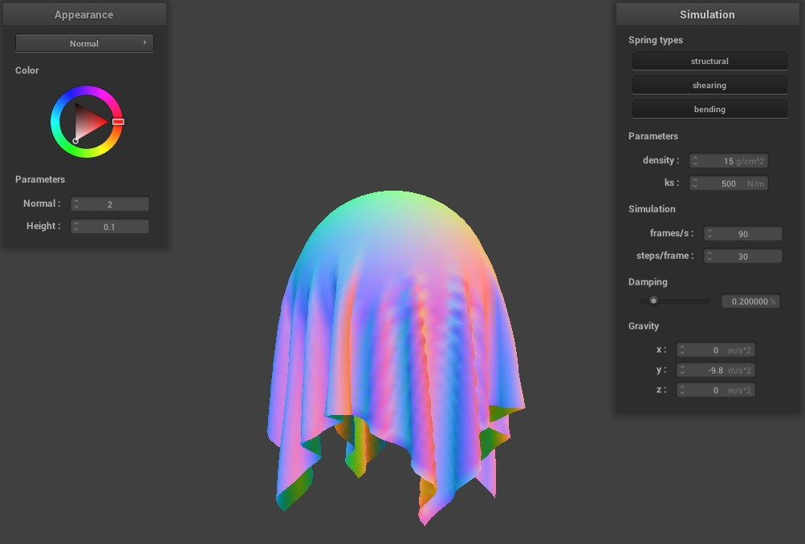
Figure 12. sphere.json with \( k_s = 500 \).
Figure 13. sphere.json with default \( k_s = 5000 \).
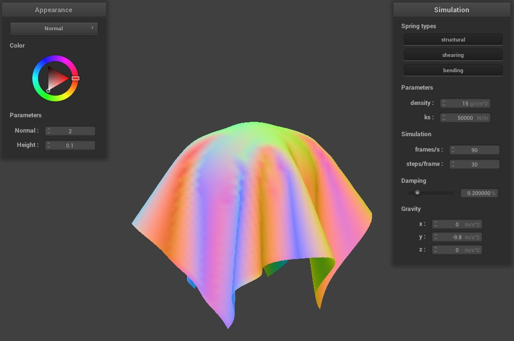
Figure 14. sphere.json with \( k_s = 50000 \).
The three sphere images show that the spring constant \( k_s \) strongly affects how tightly the
cloth preserves its shape while draping over a collision object. When \( k_s = 500 \), the cloth
behaves as a much softer sheet: it conforms more readily to the sphere, hangs lower around the
sides, and forms looser, more compliant folds. At the default value \( k_s = 5000 \), the drape
is balanced, with visible folds and natural contact while still preserving a moderate amount of
structural stiffness. When \( k_s = 50000 \), the cloth is substantially stiffer, so it wraps the
sphere less deeply, retains a broader silhouette, and produces folds that look more rigid and
less collapsed. The comparison makes it clear that lower spring stiffness leads to deeper drape
and stronger local folding, while higher spring stiffness preserves the cloth's global structure
more aggressively during contact.
Plane Resting State
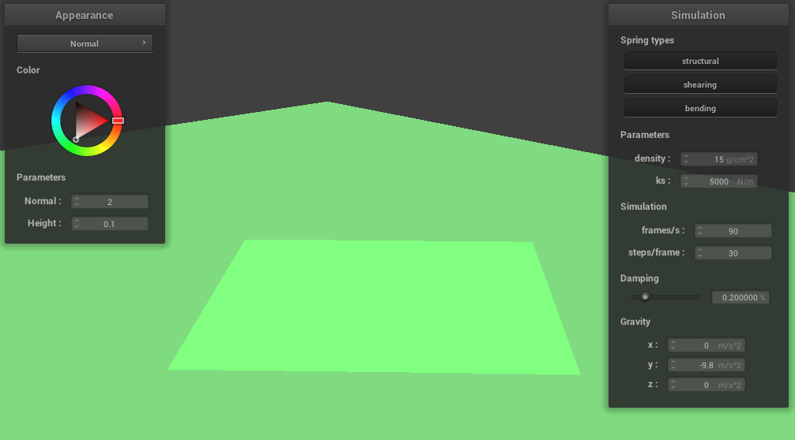
Figure 15. Final shaded resting state on scene/plane.json.
The plane resting-state image shows the cloth after it has fallen onto the plane and settled into a
stable final configuration. In this case, the main success criterion is not dramatic folding but
correct contact behavior: the cloth should come to rest on the plane, remain slightly above the
surface due to the surface offset, and avoid passing through the collision geometry. The resulting
configuration demonstrates that the plane collision handling correctly detects crossings, projects
the cloth back to the surface, and applies frictional correction in a way that keeps the final
resting state stable and physically plausible.
Part 4: Handling Self-Collisions
Spatial Hashing and Self-Collision Response
In Part 4, the cloth must prevent different regions of the sheet from occupying the same space.
A naive self-collision method would compare every point mass against every other point mass, which
would require \(O(n^2)\) pairwise distance checks for \(n\) masses. That quickly becomes too
expensive for a dense cloth mesh. To reduce this cost, we use spatial hashing. The main idea is
to partition space into buckets, store nearby point masses in the same bucket, and then only test
self-collision against point masses that lie in the same bucket rather than against the entire cloth.
Let \(w\) and \(h\) denote the physical cloth width and height, let \(N_w\) and \(N_h\) denote the
numbers of point masses along the width and height directions, and let \(\tau\) denote the cloth
thickness. Following the assignment specification, the spatial map uses bucket dimensions
Here, \(w_s\) is the bucket width, \(h_s\) is the bucket height, and \(d_s\) is the bucket depth.
For a point mass at position \(\mathbf{x} = (x,y,z)\), the corresponding integer bucket coordinates are
\[
i = \left\lfloor \frac{x}{w_s} \right\rfloor,
\qquad
j = \left\lfloor \frac{y}{h_s} \right\rfloor,
\qquad
k = \left\lfloor \frac{z}{d_s} \right\rfloor.
\]
These integer cell coordinates are combined into a hash key. The function hash_position computes that
key, and build_spatial_map rebuilds the entire spatial map each simulation step by inserting a pointer
to every point mass into the bucket associated with its current position. In other words, the map stores
a relation of the form
\[
\text{hash key} \;\longmapsto\; \{\text{point masses contained in that spatial cell}\}.
\]
After the map has been built, self_collide only inspects the point masses stored in the same bucket as
the current point mass. Let \(\mathbf{x}_i\) denote the position of the point mass being corrected and
let \(\mathbf{x}_j\) denote the position of another point mass in the same bucket. A self-collision
response is triggered whenever the two point masses are closer than twice the cloth thickness:
If this inequality holds, the two point masses overlap too closely and the current point mass must be
pushed away from its neighbor. The pairwise correction vector points from \(\mathbf{x}_j\) to
\(\mathbf{x}_i\) and has magnitude equal to the overlap distance:
The implementation skips the case \(i=j\) so that a point mass does not collide with itself, and it
also ignores zero-distance cases to avoid dividing by zero. If there are \(m\) valid overlapping
neighbors in the bucket and if \(s\) denotes the number of simulation substeps, then the final
correction applied to the current point mass is the average of all pairwise corrections divided by
\(s\):
This averaging prevents a point mass from being over-corrected by many nearby neighbors in a single
time step, while the division by \(s\) distributes the repulsion more gently across the substeps.
Algorithmically, the Part 4 update therefore proceeds in three stages: rebuild the spatial hash map
from the current cloth configuration, query each point mass against the masses in its own bucket,
and apply an averaged repulsion correction whenever self-overlap is detected. The result is a cloth
that can fall, fold, and pile onto itself without obvious large-scale self-penetration.
Default Self-Collision Progression
The first sequence below shows the default self-collision behavior in scene/selfCollision.json using
the default parameters \( \rho = 15 \), \( k_s = 5000 \), and \( d = 0.2\% \). These three images
document the requested progression from an early initial self-collision, through a more developed
folding stage, to a more restful state after the pile has largely settled on the plane.
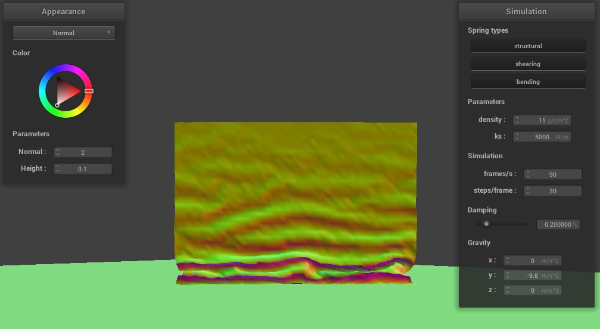
Figure 16a. Default self-collision progression, early stage.
Figure 16c. Default self-collision progression, late stage.
In the default progression, the cloth first forms a narrow band of self-contact near the lower portion
of the falling sheet. As the simulation continues, additional layers accumulate on top of this initial
fold and the cloth begins to organize into a more structured stack. By the final image, the cloth has
largely flattened into a more settled pile, but the layered structure is still visible. This is the
expected behavior for the simplified self-collision model used in the assignment: the cloth folds onto
itself and develops visible stacked layers, yet over time it can still relax into a flatter resting
state rather than maintaining a dramatically puffed pile indefinitely.
Low-Density Progression
To study how density changes self-collision behavior, the next sequence keeps the spring constant and
damping fixed at their default values and only lowers the density to \( \rho = 5 \). Because density
determines the mass assigned to each point mass, lowering \( \rho \) reduces inertia and makes the cloth
behave more like a lighter sheet under the same spring network.
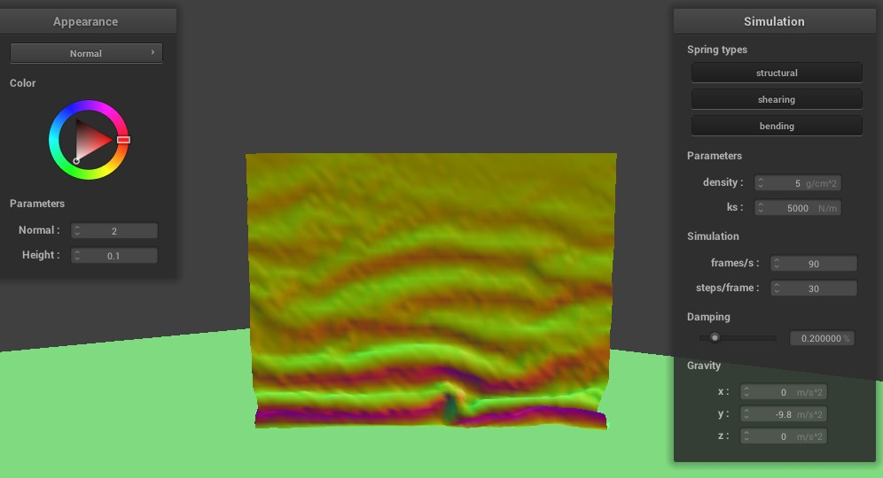
Figure 17a. Low-density progression with \( \rho = 5 \), early stage.
Figure 17c. Low-density progression with \( \rho = 5 \), late stage.
Compared with the default case, the low-density cloth behaves more gently during collapse. The folds form
and self-contact still occurs, but the pile reads as lighter and more spread out because the sheet carries
less momentum into the ground and into its own layers. The later stages appear thinner and less vertically
compressed than the denser configurations. In effect, lowering \( \rho \) makes the self-collision
response look less forceful: the cloth still folds onto itself, but it settles into a broader, lighter
pile with less aggressive compression between layers.
High-Density Progression
The next sequence raises the density to \( \rho = 45 \) while keeping the spring constant and damping
fixed. Increasing \( \rho \) increases the effective mass of the cloth, so the same gravitational
acceleration produces a heavier-looking fall and a stronger downward drive into the developing
self-contact region.
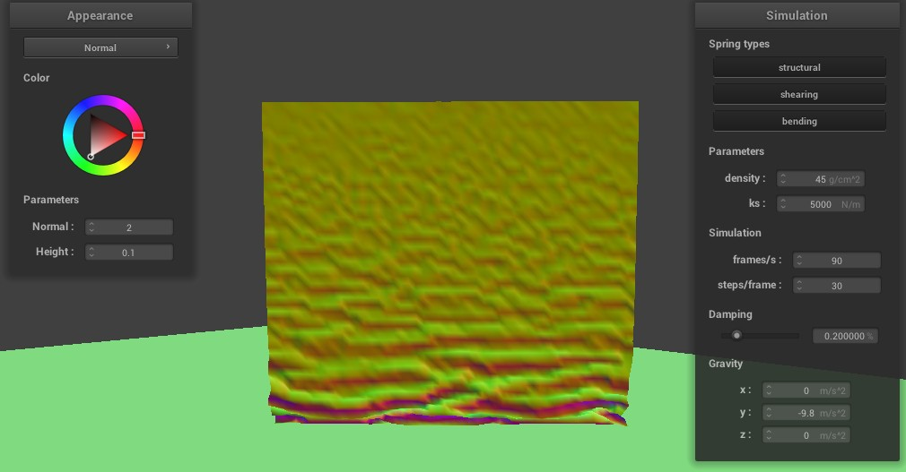
Figure 18a. High-density progression with \( \rho = 45 \), early stage.
Figure 18c. High-density progression with \( \rho = 45 \), late stage.
The high-density progression looks noticeably heavier than the low-density case. The lower portion of the
cloth develops a denser stacked band earlier in the fall, and the resulting pile becomes more compressed
and more sharply layered. In later stages, the cloth appears to collapse into itself with more force,
creating a thicker base and more concentrated layering near the contact region. This comparison shows that
increasing \( \rho \) makes the self-collision process more gravity-dominated: the cloth drives downward
more strongly, compacts its folds more aggressively, and produces a heavier, denser-looking resting pile.
Low-\(k_s\) Progression
The next sequence restores the density to its default value and lowers the spring constant to
\( k_s = 500 \). Because the spring constant controls how strongly the cloth resists stretching and
deformation, lowering \( k_s \) makes the cloth softer and more compliant during the fall.
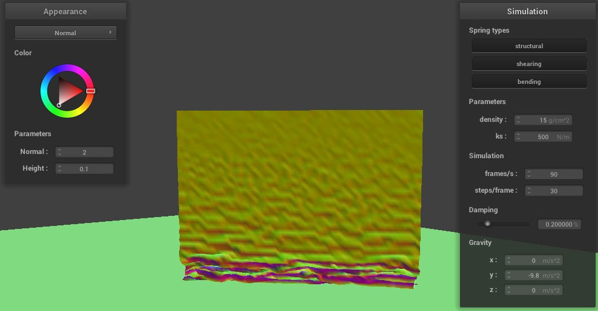
Figure 19a. Low-\(k_s\) progression with \( k_s = 500 \), early stage.
Figure 19c. Low-\(k_s\) progression with \( k_s = 500 \), late stage.
When \( k_s \) is low, the cloth offers less resistance to deformation and tends to collapse into a softer,
more compliant pile. The folding region broadens quickly, and the layered structure spreads out rather than
holding a tall, structured shape. The later images show a looser, more flattened pile with less global
rigidity than the stiffer cases. This is consistent with the role of \( k_s \): a smaller spring constant
allows larger local deformations, so the cloth bends, wrinkles, and settles with less resistance during
self-collision.
High-\(k_s\) Progression
Finally, the last sequence raises the spring constant to \( k_s = 50000 \) while keeping the density and
damping at their default values. A larger spring constant increases the cloth's resistance to stretching and
bending, so the cloth attempts to preserve its larger-scale structure more strongly during self-contact.
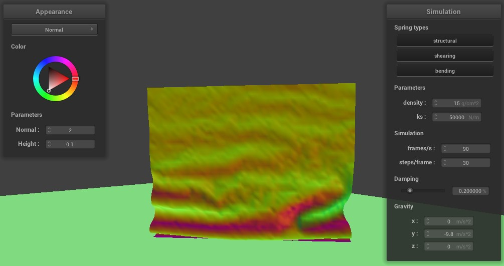
Figure 20a. High-\(k_s\) progression with \( k_s = 50000 \), early stage.
Figure 20c. High-\(k_s\) progression with \( k_s = 50000 \), late stage.
In the high-\(k_s\) progression, the cloth retains straighter, broader layers and resists local collapse
more strongly than in the low-\(k_s\) case. The self-contact bands still form, but they appear more ordered
and less floppy, and the sheet maintains a larger-scale shape for longer before relaxing into the final
pile. The later stages therefore look smoother and more structured, whereas the low-\(k_s\) cloth appears
softer and more easily compressed. Taken together, the \(k_s\) comparison shows that increasing stiffness
makes the cloth preserve larger-scale form during self-collision, while decreasing stiffness produces a
looser and more compliant pile.
Overall Comparison of Density and Spring Constant
Across all five sequences, two different physical effects become clear. Changing the density \( \rho \)
primarily changes how forcefully the cloth drives into itself and the ground: lower density produces
lighter, less compressed piles, while higher density produces denser and more forcefully stacked layers.
Changing the spring constant \( k_s \), on the other hand, primarily changes how strongly the cloth resists
deformation: lower \( k_s \) leads to softer, more collapsed folds, while higher \( k_s \) preserves
broader structure and more ordered layering. The default progression lies between these extremes, showing a
balanced case in which the cloth clearly folds onto itself, develops visible stacked layers, and eventually
relaxes into a stable, more restful pile.
Part 5: Shaders
What a shader program is and how the two stages work together
A shader program is a small GPU program that runs during rendering and decides how geometry is transformed and how pixels are colored.
In this homework, the vertex shader is responsible for taking each mesh vertex from model space into clip space, while also passing forward the data that the fragment shader will need later, such as position, normal, tangent direction, and texture coordinates.
If \( \mathbf{p} \) is a model-space point and \( M \) is the model transform, then the clip-space position used for rasterization has the form
where \(VP\) is the combined view-projection transform. Once the triangles are rasterized, the GPU interpolates the per-vertex data across the surface of each triangle. The fragment shader then uses this interpolated data to evaluate the lighting model or texture lookup at every pixel.
That separation is what makes the full pipeline work.
The vertex stage determines where the surface is and what geometric data is carried forward, while the fragment stage determines what the rendered surface looks like once light, reflection, and textures are applied.
This division is especially important in the later shaders.
For example, bump mapping leaves the mesh itself unchanged and only modifies the normal used in the fragment stage, while displacement mapping actually changes the vertex positions before rasterization and then shades the displaced surface afterward.
In other words, the vertex shader controls geometry and the fragment shader controls appearance, and the most convincing results come from using both stages together instead of relying on only one of them.
Blinn-Phong shading model
The Blinn-Phong model combines three lighting terms.
The ambient term gives the surface a small base illumination even when it is not facing the light directly.
The diffuse term models how strongly the surface faces the light source, so it becomes brighter when the normal aligns with the light direction and darker when it turns away.
The specular term models the shiny highlight and depends on how well the normal aligns with the halfway direction between the light and the camera.
The full model can be written as
is the halfway vector.
We used the cloth for these renders because the folds make the differences between the terms easy to read.
In all four collected Phong renders, the user interface still displayed Normal equal to 2 and Height equal to 0.1, but those controls are not part of the Phong shader itself, so the visual result here comes entirely from the ambient, diffuse, and specular lighting terms.
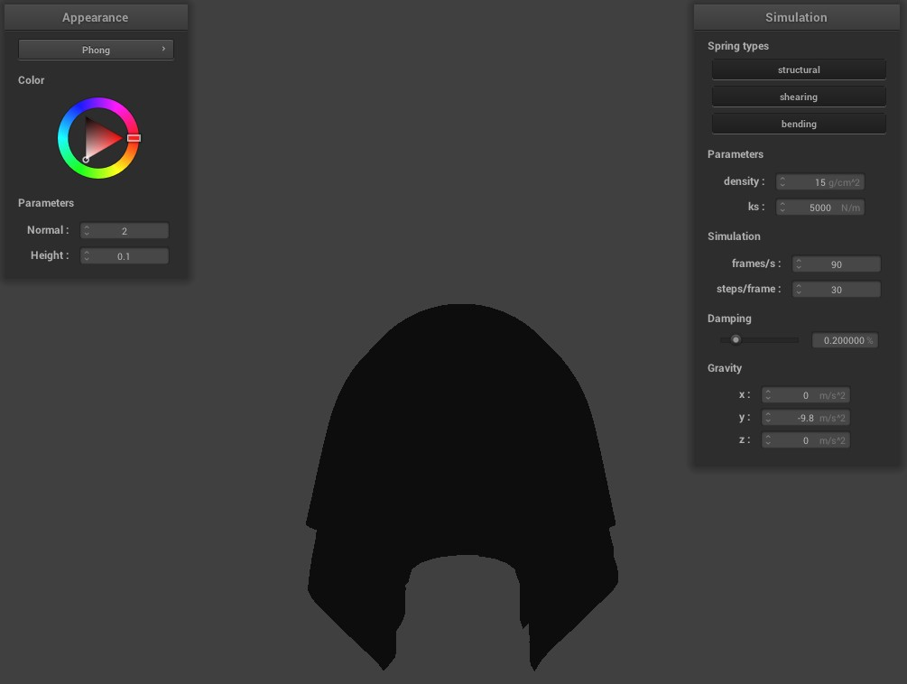
Figure 21a. Ambient term only.
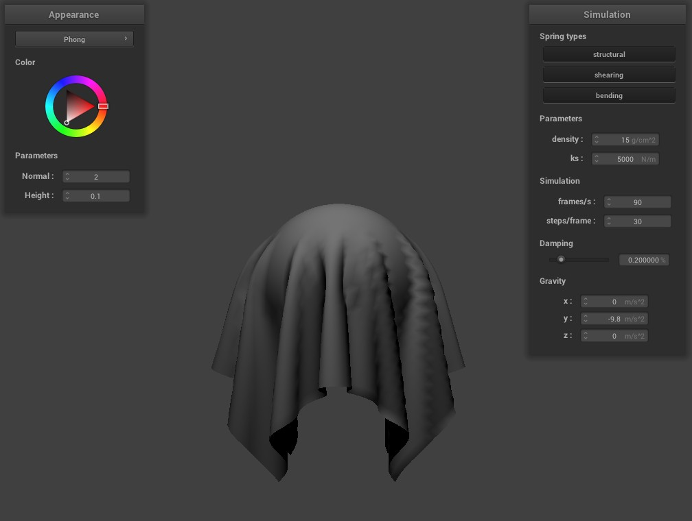
Figure 21b. Diffuse term only.
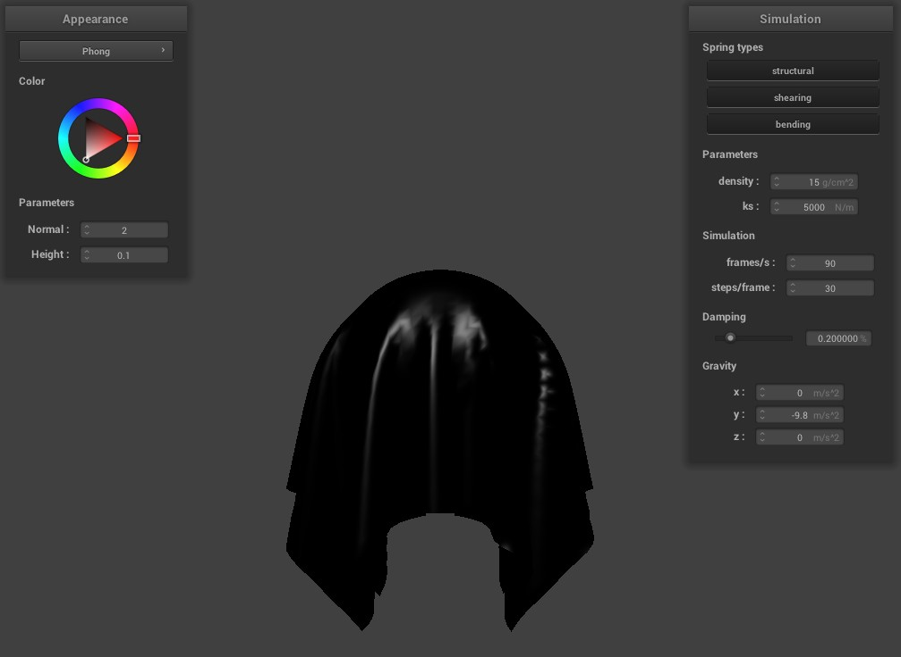
Figure 21c. Specular term only.
The ambient image is almost entirely a dark silhouette because the ambient coefficient is intentionally small.
That is expected behavior, since ambient light is only meant to keep the surface from dropping completely to black.
The diffuse image shows the smooth large-scale shape of the cloth because its intensity is controlled by \( \max(0,\mathbf{n}\cdot\mathbf{l}) \).
Folds that face the light become brighter and folds that turn away become darker.
The specular image contains only a small set of bright highlights because the glossy term is concentrated where \( \mathbf{n}\cdot\mathbf{h} \) is large.
This is why the highlights appear as narrow bright streaks along the curved folds rather than as a broad change in brightness over the whole cloth.
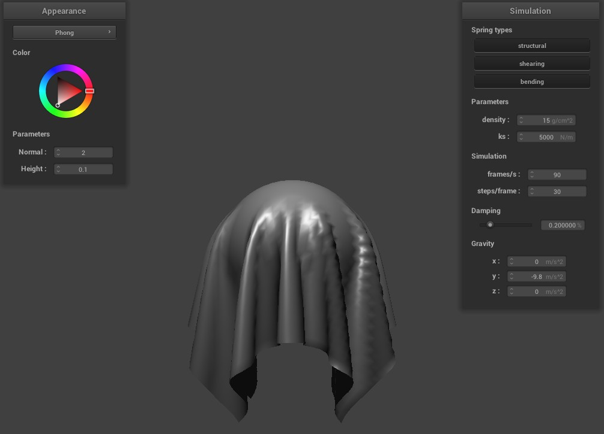
Figure 22. Full Blinn-Phong shading using the sum of ambient, diffuse, and specular terms.
Once the three terms are added together, the cloth looks much more complete.
The ambient contribution keeps the dark side of the cloth readable, the diffuse term gives the folds their broad shape, and the specular term adds the bright glossy accents that make the material feel less flat.
The final image therefore looks the way it does because each term contributes a different visual role rather than because any single term is doing all the work.
This section was a good reminder that realistic shading usually comes from combining several simple terms that each encode one different part of the lighting behavior.
Texture mapping with a custom texture
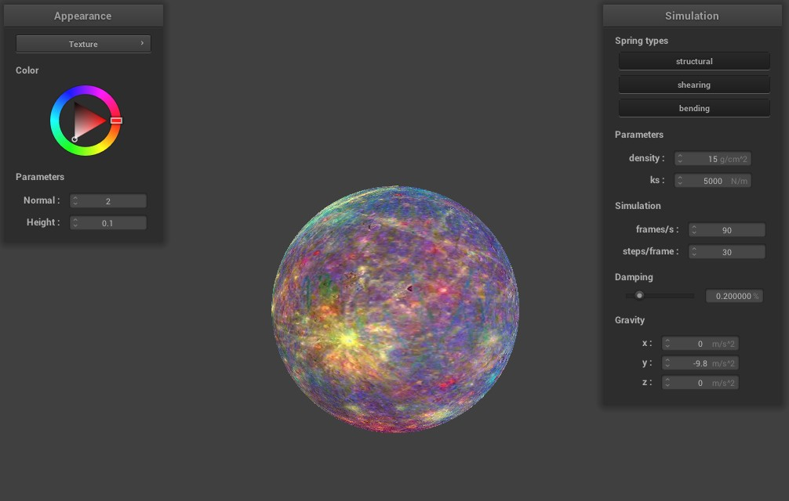
Figure 23. Texture mapping with a custom Mercury image. The displayed UI values are Normal equal to 2 and Height equal to 0.1, but the Texture shader itself only uses the texture lookup.
For texture mapping, we used a custom image of Mercury sourced from NASA.
The shader is mathematically simple: it interpolates the surface texture coordinates \( (u,v) \) across the triangle and samples the image by evaluating
The sampled color is then written directly to the output fragment color.
This means the visual result comes entirely from the UV map and the chosen image, not from any height-map or reflection computation.
Since the source image is itself a circular planetary render, it looks best on the sphere.
Mapping it onto the sphere reinforces the idea of a planet-like surface and avoids the awkward empty black corners that appear if the same image is stretched across a large flat sheet.
The result is a clean example of how UV interpolation and texture lookup can project a detailed image onto a relatively simple mesh.
Bump mapping
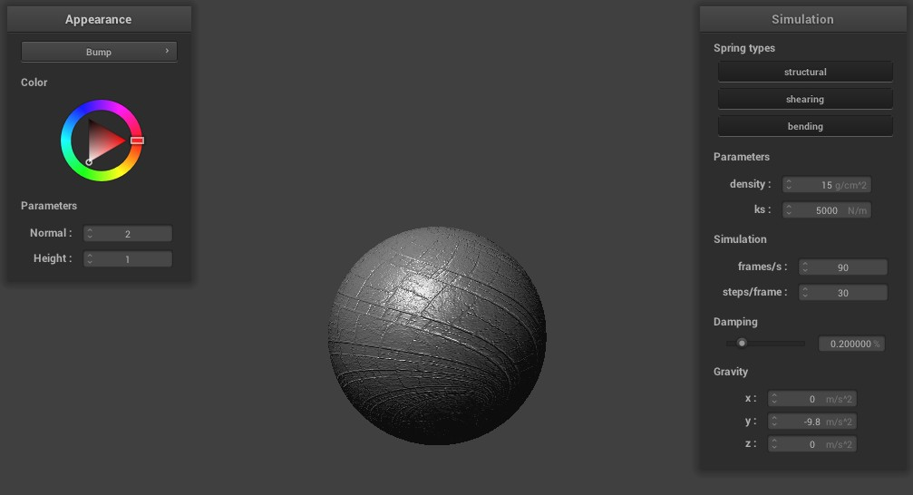
Figure 24a. Bump mapping on the sphere with Normal equal to 2 and Height equal to 1.
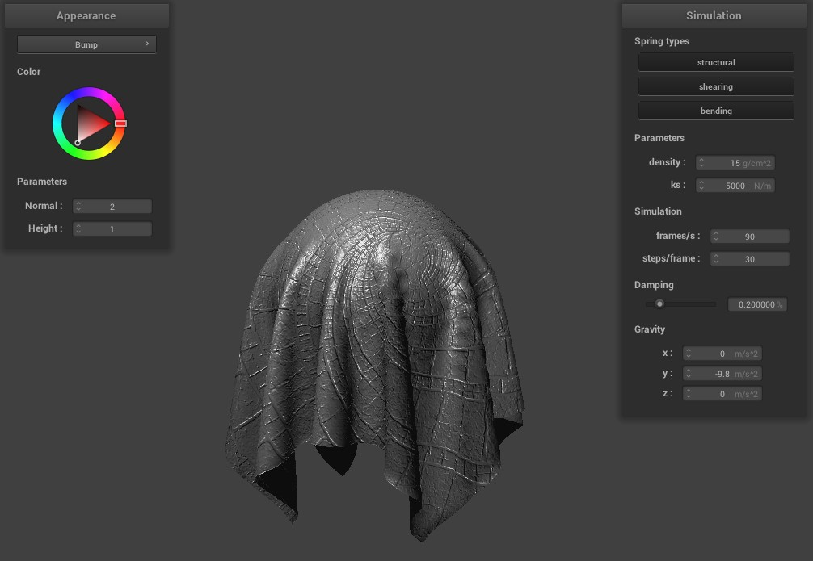
Figure 24b. Bump mapping on the cloth with Normal equal to 2 and Height equal to 1.
For both bump mapping and displacement mapping, we deliberately chose a spiraled mosaic texture instead of the default texture.
The image contains curved grout lines, cracked tile surfaces, and strong local contrast across several scales.
That makes it an excellent height-map source, because the shader can interpret bright and dark changes as small surface variations instead of as only color changes.
The spiral structure also produces an immediately readable directional pattern on both the sphere and the cloth, which makes the bump and displacement comparisons easier to understand.
In the bump shader, the mesh geometry itself is not moved.
Instead, we sample nearby height values from the same texture and estimate the local slope by finite differences:
\[
dU = \bigl(h(u+\tfrac{1}{w},v)-h(u,v)\bigr)k_h k_n,
\qquad
dV = \bigl(h(u,v+\tfrac{1}{h})-h(u,v)\bigr)k_h k_n.
\]
which is then transformed into the surface frame through the tangent-bitangent-normal matrix.
The result is that the lighting behaves as if the surface contains real tile relief, even though the actual silhouette has not changed.
On the sphere, the pattern reads like a fine engraved shell.
On the cloth, the same texture rides over the large cloth folds and creates a layered effect in which the simulated cloth shape and the mosaic microrelief are both visible at once.
Displacement mapping
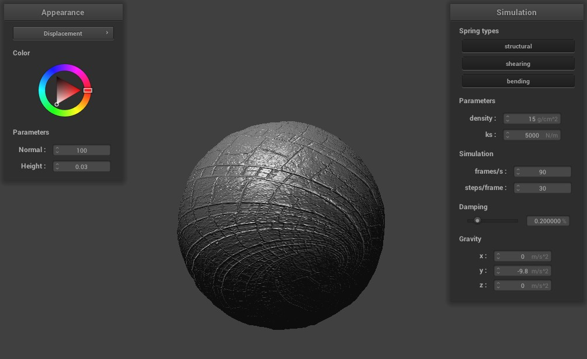
Figure 25a. Displacement mapping on the sphere with Normal equal to 100 and Height equal to 0.03.
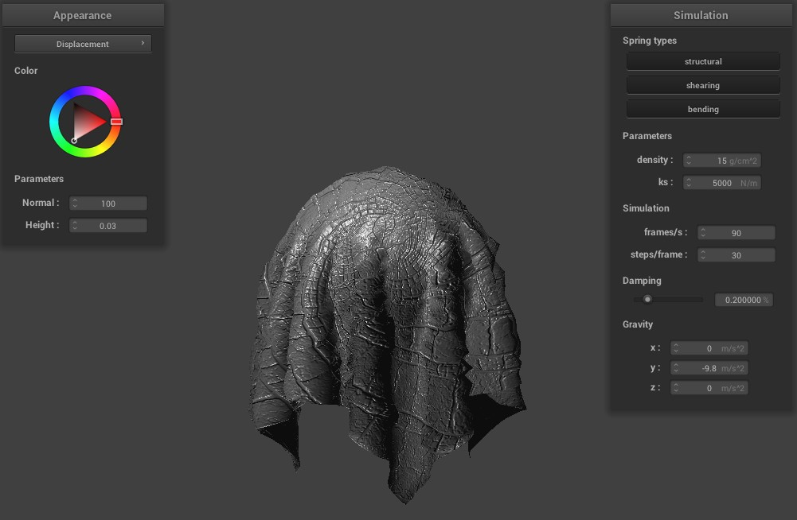
Figure 25b. Displacement mapping on the cloth with Normal equal to 100 and Height equal to 0.03.
Displacement mapping uses the same texture and the same normal-perturbation idea in the fragment stage, but it adds one critical geometric step in the vertex shader.
If \( h(u,v) \) is the sampled height and \( \mathbf{n} \) is the model-space normal, then the displaced vertex position is
This is the key difference between bump and displacement.
In our final implementation, the fragment-stage lighting logic is shared, but displacement additionally offsets the vertices before rasterization, while bump leaves the vertex positions untouched.
That is why displacement can change the silhouette and the underlying surface geometry, whereas bump only changes the way light reacts to the surface.
On the sphere, displacement produces a more physically convincing tile relief because the crack network is no longer only a shading illusion.
On the cloth, the effect becomes even more dramatic because the displaced mosaic pattern rides on top of the larger cloth folds and creates visibly sharper creases and geometric variation.
We used Normal equal to 100 and Height equal to 0.03 in these main displacement renders so that the geometry change would be obvious without causing the mesh to break apart.
Low-resolution sphere comparison with \( -o\ 16\ -a\ 16 \)
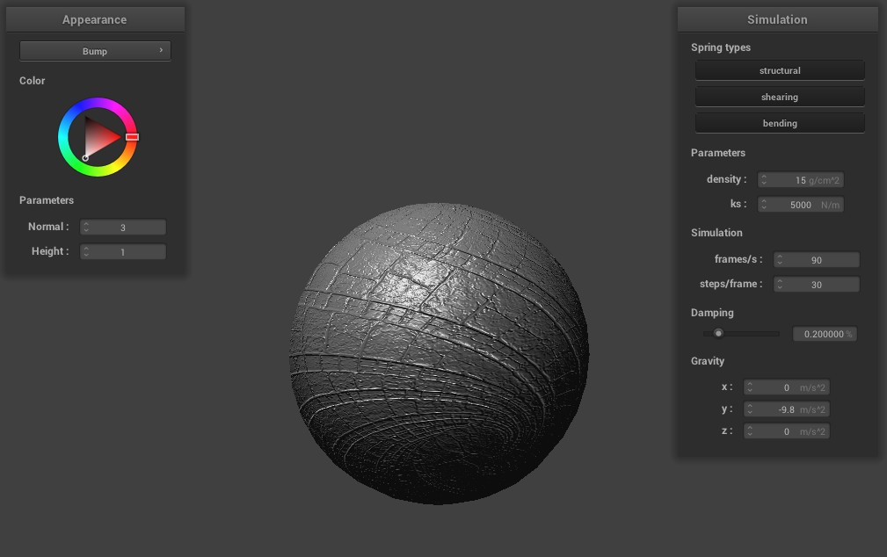
Figure 26a. Bump mapping on the low-resolution sphere with Normal equal to 3 and Height equal to 1.
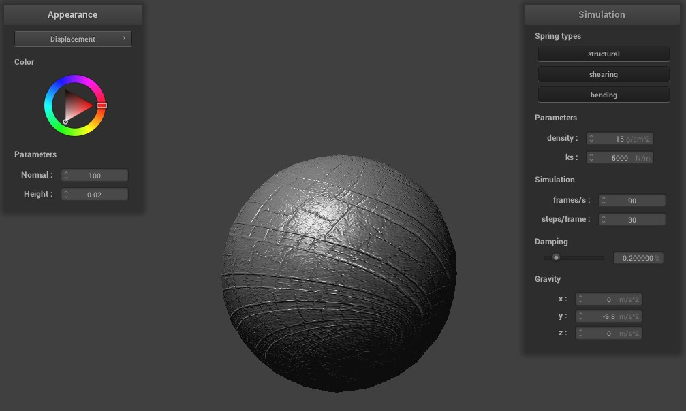
Figure 26b. Displacement mapping on the low-resolution sphere with Normal equal to 100 and Height equal to 0.02.
The low-resolution comparison highlights why mesh resolution matters.
With only a coarse sphere available, bump mapping still produces visually rich local relief because it relies mainly on the fragment-stage normal perturbation rather than on actual new geometry.
Displacement, by contrast, is limited by the small number of vertices available to move.
Even though the same texture is used, the coarse sphere can only approximate the height field in a blockier way because there are fewer geometric samples across the surface.
This makes the difference between the two methods smaller at low resolution than it is at high resolution.
High-resolution sphere comparison with \( -o\ 128\ -a\ 128 \)
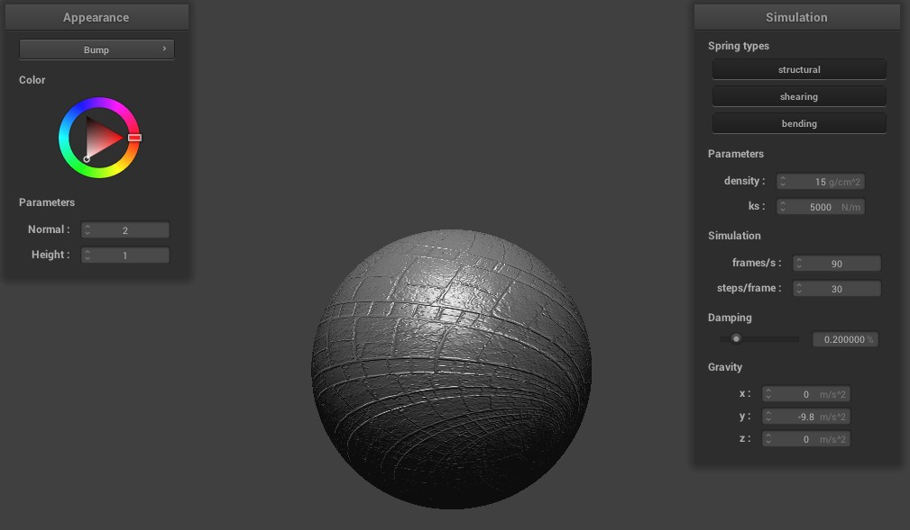
Figure 27a. Bump mapping on the high-resolution sphere with Normal equal to 2 and Height equal to 1.
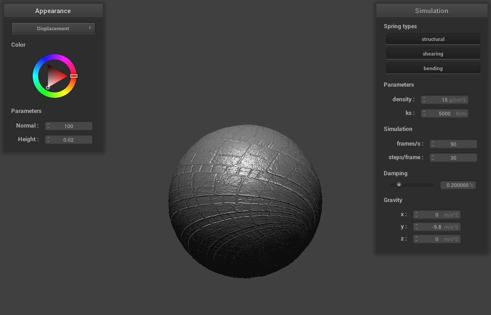
Figure 27b. Displacement mapping on the high-resolution sphere with Normal equal to 100 and Height equal to 0.02.
At high resolution, the bump and displacement results separate more clearly.
The bump shader remains visually similar because its detail is always produced through the perturbed normal field, which does not require extra mesh tessellation.
The displacement shader, however, benefits directly from the much denser vertex grid.
Since many more vertices are available, the geometry can follow the spiral mosaic texture more faithfully and the displaced surface becomes smoother and more believable.
Looking across both the low-resolution and high-resolution comparisons, the overall lesson is that bump mapping is inexpensive and visually effective even on coarse meshes, while displacement mapping becomes significantly more convincing as the mesh gets finer because it needs geometric degrees of freedom in order to represent the height field.
Mirror shader
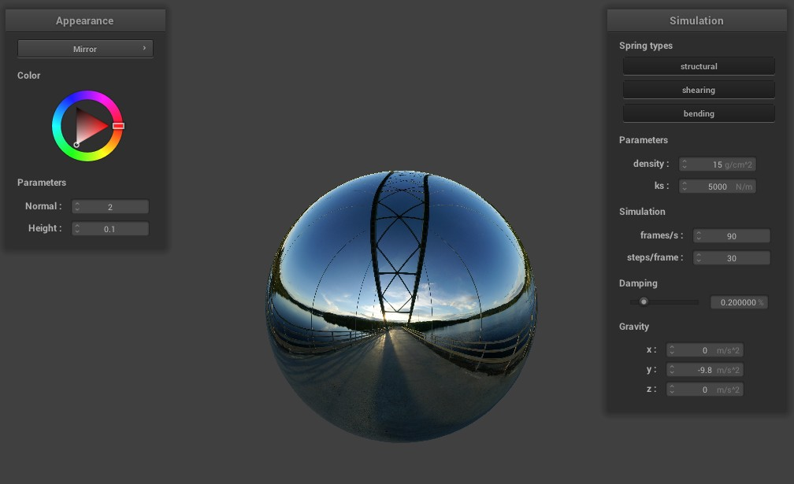
Figure 28a. Mirror shader on the sphere. The displayed UI values are Normal equal to 2 and Height equal to 0.1, but the mirror appearance is controlled by the reflection computation.
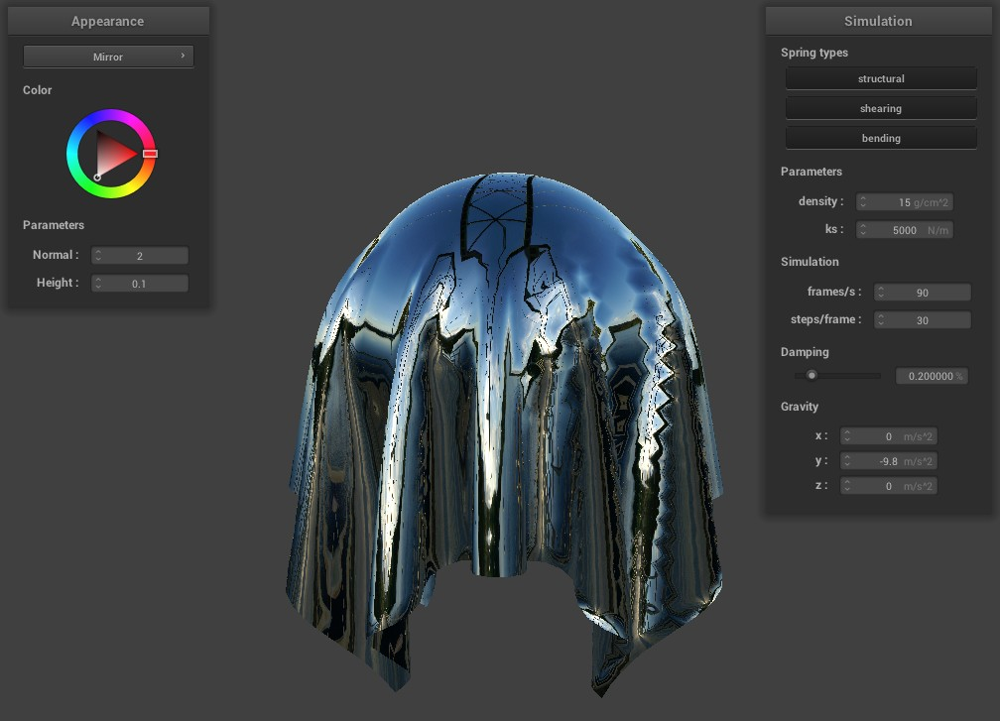
Figure 28b. Mirror shader on the cloth. The displayed UI values are Normal equal to 2 and Height equal to 0.1, but the mirror appearance is controlled by the reflection computation.
The mirror shader computes a reflection direction from the view ray and the surface normal and then samples the environment cubemap in that reflected direction.
If \( \mathbf{i} \) is the incident view direction and \( \mathbf{n} \) is the unit surface normal, then the reflection vector is
The fragment color is then taken from the cubemap as \( \mathrm{texture}(u\_texture\_cubemap,\mathbf{r}) \).
On the sphere, the result is smooth and highly readable because the geometry is regular and the reflected environment is warped only by the sphere curvature.
On the cloth, the same cubemap becomes stretched and folded by the draped geometry, which makes the reflective material look much more dynamic.
This pair is a good example of how the same shader can look very different depending on the underlying shape of the mesh.
Custom ocean shader
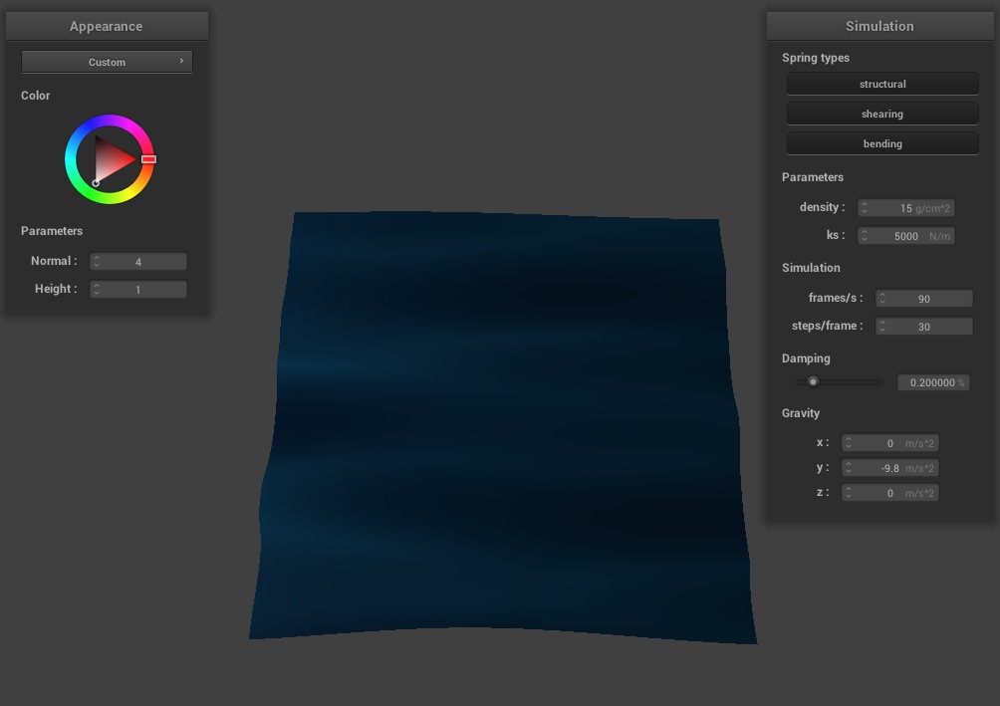
Figure 29. Custom ocean shader on the plane with Normal equal to 4 and Height equal to 1.
For the custom shader, we wanted a stylized but still physically motivated ocean surface rather than a generic glossy material.
The shader was inspired by Tessendorf-style ocean ideas, especially the use of directional waves, Fresnel-based reflectivity, and choppy crest formation.
Instead of using only one repetitive sine wave, we combined several directional wave components with different frequencies, phases, and amplitudes so that the surface would not look like an evenly striped pattern.
At the vertex stage, the wave field controls both vertical displacement and a smaller horizontal choppy displacement, which sharpens wave crests and broadens troughs.
If \( \omega_i \), \( \phi_i \), \( a_i \), and \( \mathbf{d}_i \) denote a set of wave frequencies, phases, amplitudes, and directions, then the height field follows the general form
and the surface normal is recovered from finite differences of that wave field.
In the fragment stage, we mix reflected environment light with transmitted water color through a Fresnel-style reflectance term.
In simplified form, the optical blend is
\[
C = R(\theta)\,C_{\mathrm{reflect}} + \bigl(1-R(\theta)\bigr)C_{\mathrm{water}} + C_{\mathrm{glint}},
\]
where \(R(\theta)\) increases at grazing angles.
This makes the surface more reflective near shallow viewing angles and more water-colored when viewed more directly, which is one of the main visual cues that helps the result feel like water instead of polished plastic.
Several features were important for making the result convincing.
First, we used more than one wave direction so the surface would not look mechanically repetitive.
Second, we added choppy displacement so the waves would have sharper and more ocean-like ridges.
Third, we kept the color palette in a narrow blue range so the plane reads as a continuous water body rather than a patterned fabric.
Finally, we rendered the custom shader on the plane instead of on the sphere or draped cloth, because a broad flat surface makes the swell structure and the view-dependent reflectance much easier to read.
If we wanted even more realism, the next improvements would be time-dependent phase evolution, a richer spectral wave construction, and additional amplitude envelopes to break up repetition further across the surface.